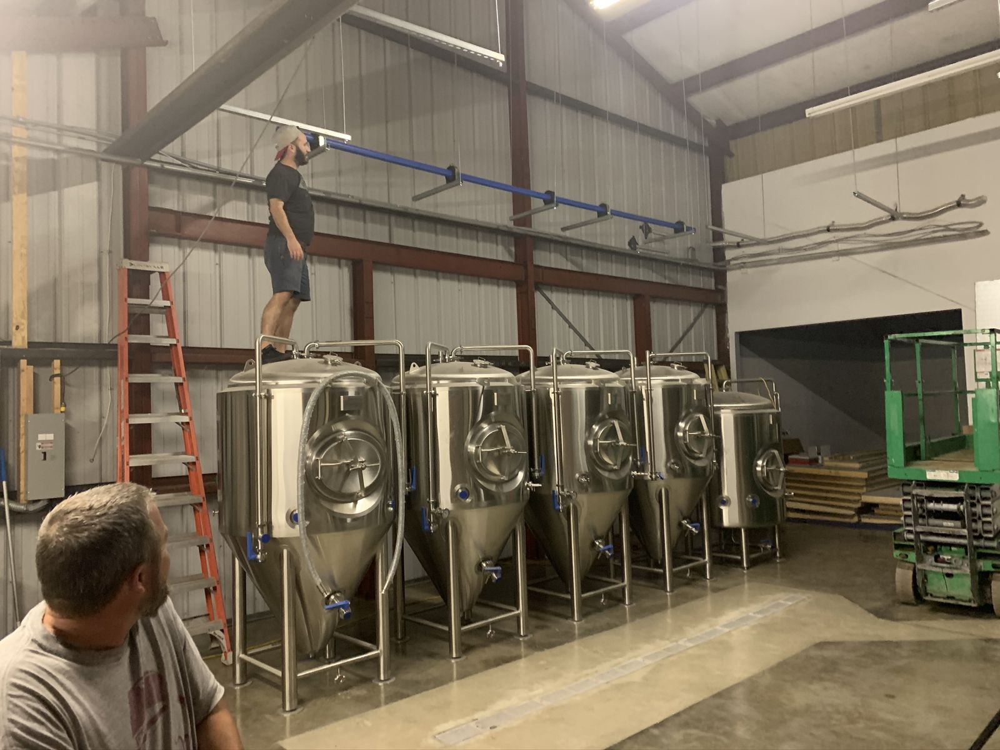

On tap now
Most of our beers are named after songs. Our tap list updates live as kegs change.

This week
Friday 6 PM: Happy Hour Trivia with Big Trophy Trivia. Live music Thursdays and First Fridays.

Coming off the trail?
We're at 311 N Safford Ave, right on the Pinellas Trail a few blocks from downtown Tarpon Springs. Biking or walking? Roll up to the walk-up window and grab a beer without leaving the trail.
| Mon–Thu | 12–9 PM |
| Friday | 12–10 PM |
| Saturday | 11 AM–10 PM |
| Sunday | 11 AM–7 PM |
Book your event
Weddings, rehearsal dinners, birthdays, team outings and more… Tell us what you have in mind and we'll get back to you about space and availability.


Our story
We opened in 2020 with one idea: a big patio, cold beer, and live music most nights. Six years later, that's still the whole plan.